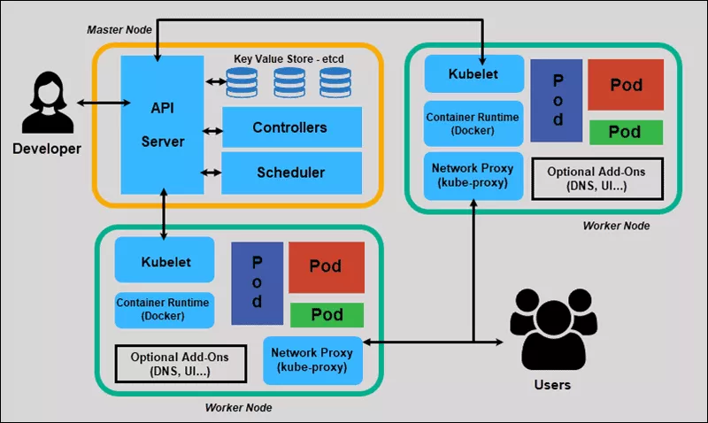

Orquestra
Kubernetes é frequentemente considerado uma tecnologia complicada e com uma longa linha de aprendizagem. E
a sua arquitetura é um dos principais motivos para tais considerações. Isso pois, além de possuir diferentes
componentes, cada qual com funcionalidades nem sempre triviais, estes componentes trabalham em conjunto, em
rotinas não amigáveis à iniciantes. Dessa maneira, um cluster Kubernetes é semelhante a uma orquestra musical (o nome
"orquestrador" não é sem propósito): Cada integrante tem seu papel individual, que pode ser analisado
e estudado por si só, mas que faz muito mais sentido quando observado ao lado dos outros membros
da orquestra. E claro, toda orquestra tem um maestro, que sabe o que esperar de cada integrante
e quais comandos dar a eles. Nesta seção, destrincharemos essa arquitetura, com o objetivo
de torna-lá mais simples.
Master Node
Também conhecido como Master Server, o Master Node é o responsável pela administração e controle do Cluster Kubernetes. Ele
realiza tal função através do armazenamento de informações de diferentes Worker Nodes, planejando onde cada container será
criado e os monitorando. Há quatro processos principais que compõem o Master Node e que possibilitam o gerenciamento do
estado do Cluster , cada um com sua esfera de influência e funcionalidades. Abordaremos cada um deles a seguir.
Etcd
Etcd é um armazenamento distribúido, no formato chave-valor, que é consistente, simples, seguro e rápido. É usado para
guardar e gerenciar informações críticas que sistemas distribuídos (como um Cluster Kubernetes) necessitam para funcionar.
No Kubernetes, o Etcd guarda informações referentes aos Nodes, Pods, ConfigMaps, Secrets, entre outros. Toda e qualquer mudança
feita no Cluster - seja a adição de novos Nodes, novos Pods, novos services, etc - é incluída e atualizada no Etcd.
Kube API Server
O Kube API Server é o ponto de entrada (entry point) para todos os comandos REST usados no gerenciamento do Cluster.
Esse componente é muitas vezes visto como um painel de controle do Kubernetes, justamente por permitir ao usuário interagir
com o Master Node. Além disso, o API Server é o único componente que interage diretamente com o Etcd. E, já que tudo que acontece no Cluster
acaba sendo registrado no Etcd, podemos dizer que todos os componentes devem se comunicar com o API Server.
Kube Scheduler
A responsabilidade do Kube Scheduler está em decidir quais Pods estarão em quais Nodes, seguindo critérios específicos.
Por exemplo, alguns Pods necessitam de determinados recursos (como mais memória RAM) que podem estar disponíveis apenas
em Nodes específicos. As regras de como essa decisão é feita podem ser definidas pelo administrador do Cluster Kubernetes.
Após decidir qual Node deverá receber determinado Pod, o Kube Scheduler informa ao Kube API Server,
que por sua vez atualiza determinados dados no Etcd.
Kube Controller Manager
Esse componente é responsável por monitorar e detectar mudanças no estado do Cluster. Por exemplo, é o Kube Controller Manager que observa
os Worker Nodes e seus respectivos Pods, atento à possíveis falhas. Se algum problema ocorrer, o Controller Manager deverá informar
ao API Server, que tomará as medidas necessárias para que o Cluster retorne ao seu estado ideal.
Worker Node
Worker node é o nome dado uma máquina de trabalho (working machine) integrante de um cluster Kubernetes.
Essas máquinas Podem ser físicas, virtuais (virtual machine - VM) ou uma aplicação em nuvem.
A principal responsabilidade de um worker node (frequentemente referido apenas como node) é o armazenamento de
múltiplos Pods. Ou seja, esses componentes são os responsáveis diretos pelo funcionamento da aplicação
pela qual o cluster é responsável. Para entender melhor seu funcionamento, detalharemos a seguir os principais
processos que compõem um worker node.
Containers Runtime
Todo worker node deve possuir um container runtime, como Docker, por exemplo. Isto é esperado já que, como citado,
o objetivo de um node é cuidar dos Pods, que por sua vez possuem os containers.
Kubelet
Kubelet é outro processo de suma importância, presente em todo node. O objetivo desse agente é
garantir que os containers de cada Pod estão rodando como esperado. Para isso, o Kubelet toma como
base PodSpecs (objetos YAML ou JSON que descrevem um Pod) e garante que os
containers descritos neles estão rodando como esperado. Cabe também ao Kubelet a tarefa de inicializar
um Pod, definindo a quantidade de recursos da máquina que deve ser reservada a ele, como memória e CPU.
Kube-Proxy
Na página de Componentes, descrevemos o funcionamento dos Services Kubernetes.
Talvez pela leitura daquela seção, o leitor tenha tido a errônea compreensão de que os Services são responsáveis
por fazer o encaminhamento das requisições. Na realidade, services não fazem parte da rede de Pods, porque eles
não existem de verdade. Tratam-se de uma abstração, que existem somente na memória do Kubernetes. Mas então
como eles são acessíveis por todo Cluster e como ocorre o encaminhamento de requisições? Isso é responsabilidade
do Kube-Proxy.
O Kube-Proxy é responsável por identificar um novo Service e criar as regras de acesso a partir de seu Node.
Essas regras definirão como um Pod fará requisições ao(s) Pod associado(s) com o Service. A maneira como o
Kube-Proxy cria essas regras é utilizando tabelas de IP, que associarão o IP estável do Service a um IP
instável de um Pod pertencente a ele. O Proxy encaminha
O Kube-Proxy pode usar os protocolos TCP, UDP e SCTP para realizar tais comunicações entre Pods.
Um exemplo geral
Para melhor compreender o funcionamento de cada um dos componentes do Master Node, imaginemos um exemplo simples: um administrador
do Cluster deseja criar um novo Pod. Ele então, através, do Kube API Server, faz uma requisição de criação de um novo Pod.
Primeiro, a requisição é autenticada e então, validada pelo o API Server; a seguir, ele cria um objeto de Pod, sem atribuí-lo a nenhum
Node, e informa ao Etcd. O Kube Scheduler está constantemente monitorando o API Server e percebe que há um novo objeto de Pod sem
um Node associado; ele então encontra o Node perfeito para receber o ainda não criado Pod e informa ao API Server. Como esperado,
o API Server atualiza no Etcd as informações referentes ao Pod, e então passa a informação ao Kubelet do Worker Node escolhido.
Finalmente, o agente Kubelet criará o Pod em seu Node, e solicitará que o Container Runtime rode a imagem da aplicação. Feito isso,
o Kubelet informa que o status do Pod ao API Server, que por sua vez atualiza as informações no Etcd.

Visão geral da arquitetura do Kubernetes.
Imagem retirada de Way to Easy Learn.
Disponível em https://www.waytoeasylearn.com/learn/kubernetes-architecture/.